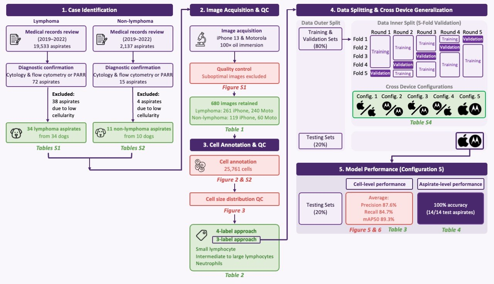
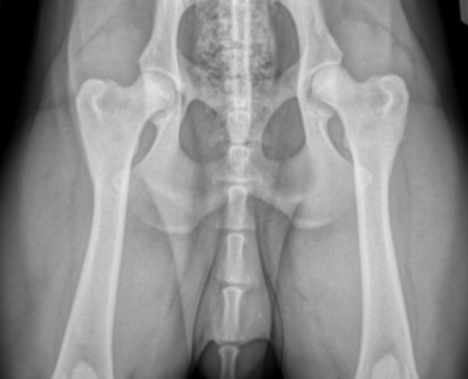
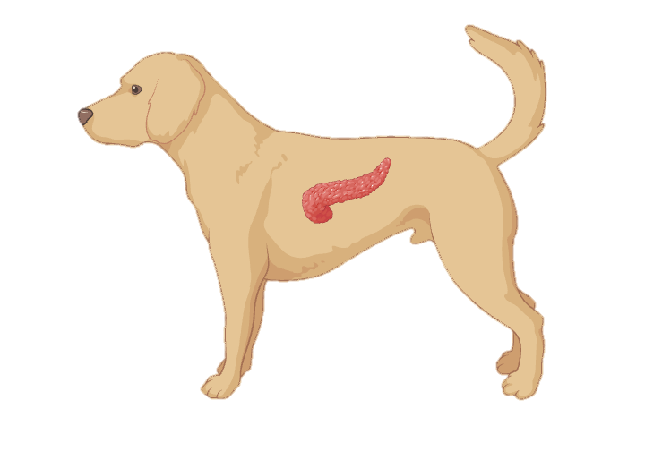
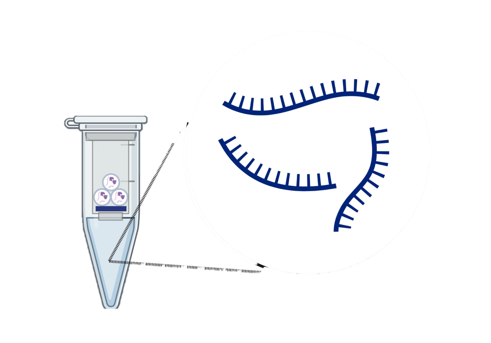
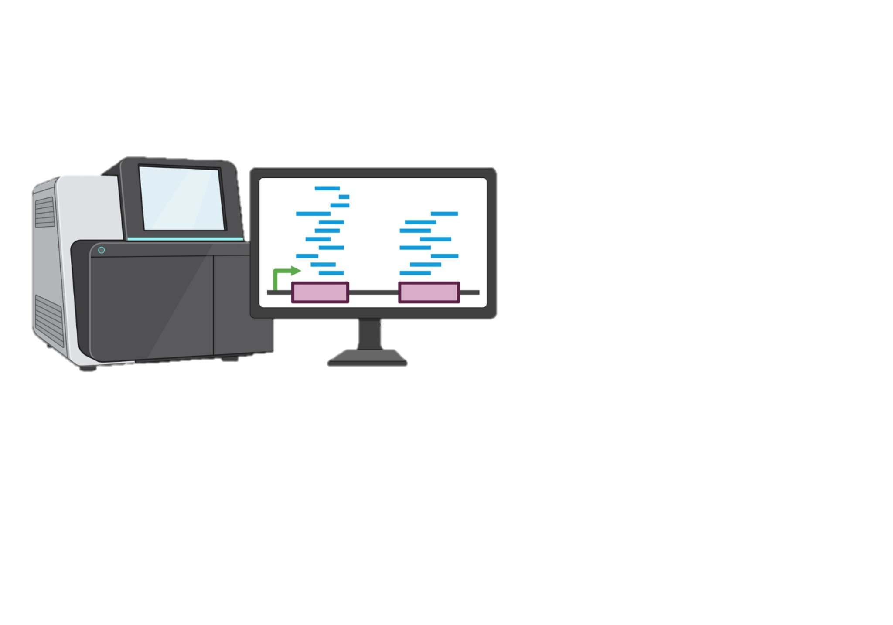
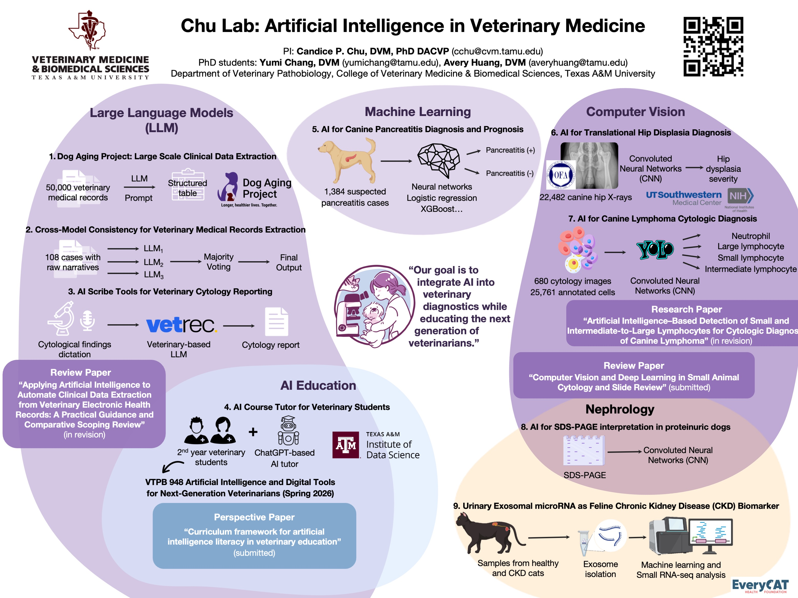

Research
The lab develops and evaluates artificial intelligence for veterinary diagnostics, builds the informatics that makes clinical data usable, and pursues molecular biomarkers for earlier disease detection.
"Our goal is to integrate AI into veterinary diagnostics while educating the next generation of veterinarians."
Diagnostic AI and Digital Cytology
Image AI · Cytology · Clinical validationBuilding and validating computer-vision models on clinically curated, specialist-annotated veterinary image datasets — with attention to diagnostic performance, error analysis, and what it actually takes to deploy a model in a diagnostic laboratory.
AI-Assisted Canine Lymphoma Cytology
Detection and classification of neutrophils and small, intermediate and large lymphocytes across 680 cytology images with 25,761 specialist-annotated cells. Work spans image acquisition, annotation, a YOLO detection workflow, diagnostic performance and error analysis.

AI for Canine Hip Dysplasia Screening
Convolutional neural networks for hip dysplasia severity grading across 22,482 canine hip radiographs, with translational relevance to human orthopedic screening. Supported by the Orthopedic Foundation for Animals in collaboration with UT Southwestern Medical Center.

AI for Canine Pancreatitis Diagnosis and Prognosis
Neural networks, logistic regression and gradient-boosted models applied to 1,384 suspected canine pancreatitis cases for diagnosis and prognostication.

Large Language Models and Veterinary Informatics
Clinical records · AI scribes · Evaluation & governanceTurning free-text veterinary records into structured, research-ready data — and measuring where language models fail. Evaluation, hallucination and error analysis, and data governance are treated as first-class research questions, not afterthoughts.
AI Scribe Evaluation for Clinical Documentation
Evaluating AI scribe tools in veterinary clinical workflows: documentation burden, accuracy of generated records, and the review process a clinician still needs to own. Supported by VetRec.
Dog Aging Project: Large-Scale Clinical Data Extraction
Prompt-driven extraction of structured clinical variables from roughly 50,000 veterinary medical records contributed to the Dog Aging Project.
Molecular and Precision Diagnostics
microRNA · RNA-seq · Comparative nephrologyNon-invasive molecular markers for kidney disease in dogs and cats, built on RNA sequencing, single-cell transcriptomics and digital cytometry — and read across to human nephrology wherever the biology allows.
Urinary Extracellular Vesicle microRNAs in Feline CKD
Identifying urinary extracellular vesicle-derived microRNAs as sensitive and specific biomarkers for early-stage feline chronic kidney disease. Supported by the EveryCat Health Foundation.

Single-Cell RNA Sequencing and Digital Cytometry of the Canine Kidney
Single-cell atlases of the canine kidney that enable digital cytometry — estimating cell-type composition from bulk transcriptomes and tracking how it shifts as chronic kidney disease progresses.


View full size